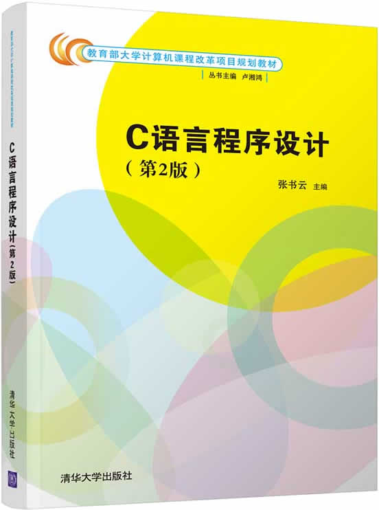

首页 > 书籍下载
《C语言程序设计(第2版)》张书云PDF下载（高清完整版）
|  | 作者：张书云 |
| 出版时间：2021年01月01日 | |
| 出版社：清华大学出版社 | |
| 书号ISBN：9787302570578 | |
| 总页数：304 | |
| 总字数：46.6W |
这是一本初学者也能阅读的 C 语言书籍，内容全面，实例丰富，很多学校把它作为课堂教材，适合对 C 语言感兴趣的读者。
这里提供的是《C语言程序设计(第2版)》张书云的高清 PDF 下载，内容完整，附带目录标签。
和其它同类的 C 语言书籍相比，这本书最大的特点就是内容全面，几乎涵盖了 C 语言所有的知识点。书中还穿插了大量的应用实例，培养读者用 C 语言解决问题的能力，最终实现入门 C 语言。
作为一名老程序员，建议初学者在学习 C 语言的过程中，一定要多动手敲代码，可以去力扣上刷一些 C 语言的题目，代码写的越多，C语言基础越扎实。
书籍目录
- 第1章 C语言概述 1
- 1.1 程序设计语言 1
- 1.2 C语言的发展历史 3
- 1.3 使用C语言进行程序开发 3
- 1.4 C语言程序的组成与执行 11
- 1.5 C语言的特点 13
- 1.6 C程序的编程风格 14
- 1.7 综合应用例题 15
- 第2章 数据类型、常量与变量 18
- 2.1 数据类型 18
- 2.2 标识符 19
- 2.3 常量 20
- 2.4 变量 22
- 2.5 综合应用例题 26
- 第3章 数据的运算与输入输出 32
- 3.1 运算符和表达式概述 32
- 3.2 算术运算符和算术表达式 32
- 3.3 赋值运算符和赋值表达式 35
- 3.4 关系运算符和关系表达式 37
- 3.5 逻辑运算符和逻辑表达式 38
- 3.6 条件运算符和条件表达式 40
- 3.7 逗号运算符和逗号表达式 42
- 3.8 位运算符和位运算表达式 43
- 3.9 数据类型的转换 46
- 3.10 数据的输入输出 48
- 3.11 综合应用例题 55
- 第4章 C语言的三种基本结构程序设计 61
- 4.1 C语句 61
- 4.2 顺序结构程序设计 62
- 4.3 选择结构程序设计 63
- 4.4 循环结构程序设计 71
- 4.5 综合应用例题 80
- 第5章 函数 91
- 5.1 概述 91
- 5.2 函数的调用 96
- 5.3 函数的嵌套和递归 101
- 5.4 变量的存储属性 106
- 5.5 编译预处理 116
- 5.6 综合应用例题 123
- 第6章 数组 130
- 6.1 一维数组 130
- 6.2 二维数组 136
- 6.3 字符数组和字符串 140
- 6.4 函数与数组 148
- 6.5 综合应用例题 153
- 第7章 指针 165
- 7.1 指针的基本概念 165
- 7.2 指针的运算 172
- 7.3 指针与数组 175
- 7.4 函数的指针和指向函数的指针变量 192
- 7.5 指针型函数 195
- 7.6 指针数组和指向指针的指针 196
- 7.7 综合应用例题 203
- 第8章 结构体与共用体 212
- 8.1 结构体类型 212
- 8.2 指向结构体类型的指针 223
- 8.3 结构体变量作函数的参数 226
- 8.4 共用体 230
- 8.5 用typedef定义数据类型 233
- 8.6 动态数据结构的创建 234
- 8.7 链表 235
- 8.8 枚举类型 243
- 8.9 综合应用例题 245
- 第9章 文件系统 257
- 9.1 文件概述 257
- 9.2 文件指针 259
- 9.3 文件的打开与关闭 260
- 9.4 文件的读写 263
- 9.5 文件的定位 269
- 9.6 检测文件状态函数 272
- 9.7 综合应用例题 272
- 附录
- 附录A 常用ASCII码对照表 281
- 附录B C语言中的关键字 282
- 附录C C语言运算符的优先级与结合性 283
- 附录D 常用库函数 285
书籍下载
一键登录，免费下载完整版 PDF，文件名称：《C语言程序设计(第2版)》张书云.pdf